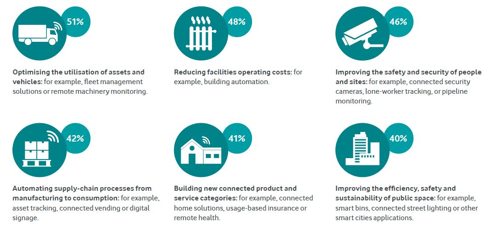
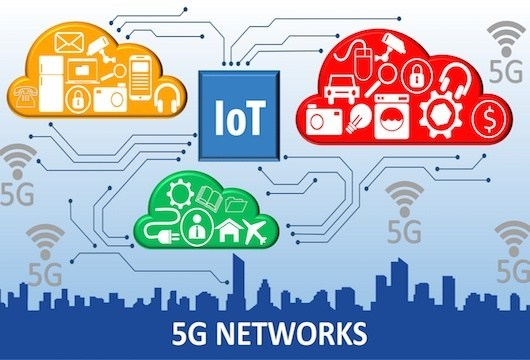

Internet of Things (IoT) (Long)
The Internet has been there for a while, mostly it's a product of people, all the data, games, images are created by people for people and about people and it changed the world. But now there is a new "wind" coming and it's going to shift things up again. This new internet is not just connecting people, it is connecting things changing the world we live, from how we pay to the way we transport to how we get energy for our home called the Internet of Things. The application of sophisticated sensors and chips are embedded in physical things that around us like watches, phones, speakers, lights, they all transmit valuable data to help us understand them about their operation and communication between them. For example, our phone has the ability to track where we are, how much light is in the area, see things around by front and back camera, and even communicate with other devices through wireless networks. Furthermore, our smartwatch can sensor our heartbeat, track our location, our steps, our height, and weight and by connecting it to our phone we can see more information on our phone. Some watches even have the ability to detect falling and calculate how bad it is to see whether we need medical help or not.

Currently, besides the growth in our daily life, IoT also contributes a tremendous part in health care, smart city, industrial production, and so on. It can provide a better way to our elderly and the potential to deal with the increasing care expense. These devices can track vitals, heart rate and body system, user activity, and sleep patterns. Seniors often forget their prescribed medicine on time, IoMT devices are built to remind them to take it and record it. In addition, IoMT would help diagnose patients, this will not replace doctor jobs but to assist them to get the process faster, and for better treatment plans to reduce the waste of resources in the health care system.
It has been estimated that by 2025 there will be more than 21 billion IoT devices. According to IoT Analytics in 2016, there were more than 4.7 billion devices connected to the internet; this will be increased to 11.6 billion IoT devices in 2021. The rise of smart cities, not just the consumer will adopt this new technology. Cities and companies will embed it to save time and money. For example, there are many smart bike rental stations placed around Melbourne you can simply download an app, scan the QR then you can rent the bike easily. Surveillance Camera with a high definition record, customers can monitor their entire estate such as building, public spaces, home, from a single remote desktop, and these footages are watermarked and encoded, stored safely
With the 5G network- fifth-generation cellular wireless coming into existence will deliver a huge impact to IoT with a much faster network meaning more data that your smart devices can be gathered, analyzed to a higher level. This impact will fuel up the entire world making IoT devices companies make their best and expand customer demand much more. Not to mention, the 5G technology will boost the auto industry to a new horizon. Automatic cars connected vehicles now and the future will benefit from it, such as Tesla..etc. For example, there will be multiple road sensors, collision sensors, surveillance sensors around the city, faster data transfer allows these cars to be able to predict and avoid the danger ahead. Tesla cars now can calculate the safest route, the distance between cars to handle self-driving systems so with IoT it will be much more efficient. For other industries such as logistics, factory, the impact of IoT is also heavy. Starting from our parcel, we can track our parcel now from our devices or Uber as another example you are able to track your driver with the delay of only seconds. Factories are able to process faster by using robots such as robot arm, cargo robot, drone delivery..etc. Companies are able to monitor them through a screen, any device that has their software. However, the smarter, the more advanced this technology is, the less human hands are required. The result may be millions of people out of work, jobs will be eliminated from developed countries to developing countries then there will be nothing left. From a profit view, this is a good thing. But from a social point, this could be disastrous. More than that, the loss of privacy is bigger since more data will be needed, the existence of cloud data. From our family photos to our personal things, our sleep pattern, locations, hobbies, status..etc. More importantly, our credit card, financial information can be stolen from these systems.
In different circumstances, the rise of IoT can help our life better, being about to understand our life better and control them with more productivity. Things like smart bands/watches, smartphones are bringing more valuable things to our life being able to track our health, locate our destination, track sports activity, timetable reminder furthermore capable to communicate to other devices such as our home system like the thermostat, speakers, lights, camera monitor them from far away, they can learn our pattern knowing when are we going to bed to set an alarm or wake up to control the house temperature, make a cup of coffee, notify us whether we have locked the door or close the garage or not. To the world we live in, it is created in our place by using smart surveillance cameras that can help people live safer lives. Sensors are placed beneath the road, bridges predict and detect any damage before it gets worse. The business will be faster and efficient for example amazon using hundreds of drones and robots to process their order, cargo to process parcels, delivery them, and they all monitor by a few operation managers it does not just save them tons of money it also makes things clean and quicker. More than that, with the help of IoT customers, they have the ability to track their shipment directly on their devices.
I have been using this technology for a very long time, to be honest, nowadays it is everywhere from the smallest things like the way we use our phone to pay things to replace the physical credit card. It helps my life so much more conveniently like instead of carrying a bunch of cards from coupons to credit cards I can have a digital version of them on my phone or my watch with the same functionality. At home, I don't need to search for the weather or open my phone to see it, I can just as Google Home or Alexa they are Artificial Intelligent build in a pocket-size speaker, I can literally ask “her” anything like news, weather, navigations, turn on any electrical appliances in my apartment simply install smart plugs, lights. In the past, there wasn’t any technology like this so it used to take time to check something or I often didn’t care about it. However, IoT changed the way I live since it is easier to do I can do it in a matter of seconds, these techs makes my life more efficient for example, I didn’t care much about my health system whether I eat too many calories or didn’t sleep right or enough but with the help of IoT the watch I wear track my pattern and alert me on my phone the next day telling me that there is something wrong with my health. Additionally, a few years ago if you want to buy something in my country you can’t monitor your delivery remotely through your phone, you will need to wait for the seller to contact you about the shipment then wait for few days without any information sometimes there is something wrong to the parcel but you didn’t know until you find out that something seemed right since it already too long and you found out that they can’t make it for any reason but now you can track your delivery easily where is it, what time did it arrive at the post when did it out for delivery in details. Ultimately, this new ”wind” doesn’t change not only my life but also the way our family lives the same way that it is doing to me now.